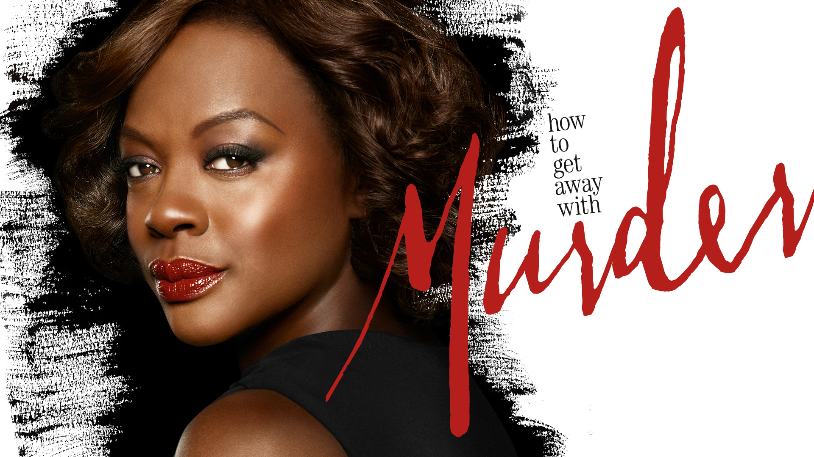

1. Game Of Thrones

Game of Thrones is an adaptation of “A Song of Ice and Fire” created by George R.R. Martin. The story is based on Westeros and Essos which are fantasy locations. The show relates various plot lines which are about some noble houses that are involved in a war for the Iron Throne and the constant threat of war by the northern creatures (called “the Others”) against the living creatures.
Back to top2. How To Get Away With Murder
Annalise Keating (Oscar- and Tony-winning actress Viola Davis), a brilliant, charismatic and seductive professor of defense law, teaches a class called How to Get Away With Murder. Annalise, also a criminal defense attorney, selects a group of students -- the best and the brightest -- to assist with cases at her firm alongside her employees, the trustworthy and discreet Frank Delfino (Charlie Weber) and Bonnie Winterbottom ("Gilmore Girls" alum Liza Weil), an associate attorney. Mysteries arise that test everyone's limits and reveal dark truths.
Back to top3. Breaking Bad

This series tells the story of Walter White, portrayed by the actor Bryan Cranston. Mr. White is a chemistry teacher that once had lots of potential but due to some money issues he had to do some extra work at a car wash. When he is diagnosed with lung cancer he does everything he can to leave money for his family. Searching for an income of money he finds his real passion about cooking crystal meth and a long story develops from there.
Back to top4. You
What would you do for love? For a brilliant male bookstore manager who crosses paths with an aspiring female writer, this question is put to the test. A charming yet awkward crush becomes something even more sinister when the writer becomes the manager's obsession. Using social media and the internet, he uses every tool at his disposal to become close to her, even going so far as to remove any obstacle --including people -- that stands in his way of getting to her.
Back to top5. Friends
Six young men and women live in the same apartment complex and face life and love together in Manhattan, New York City. As they're constantly sticking their noses into each another's businesses, as well as sometimes swapping romantic partners, the group always get into the kind of comic situations that most other people never experience, especially during breakups.
Back to top